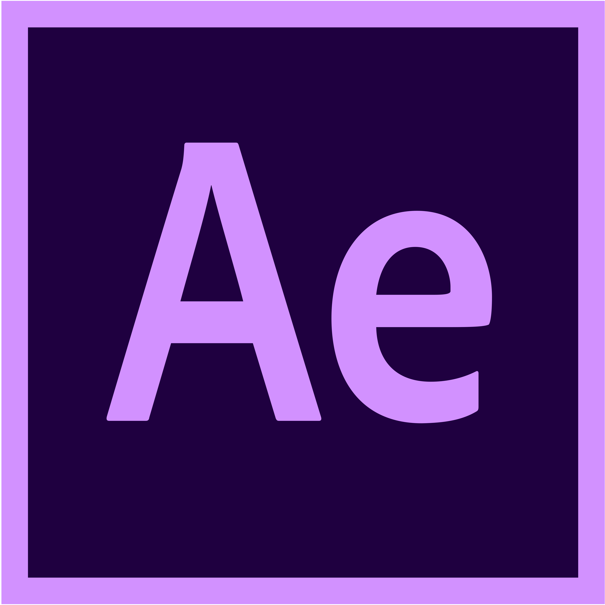
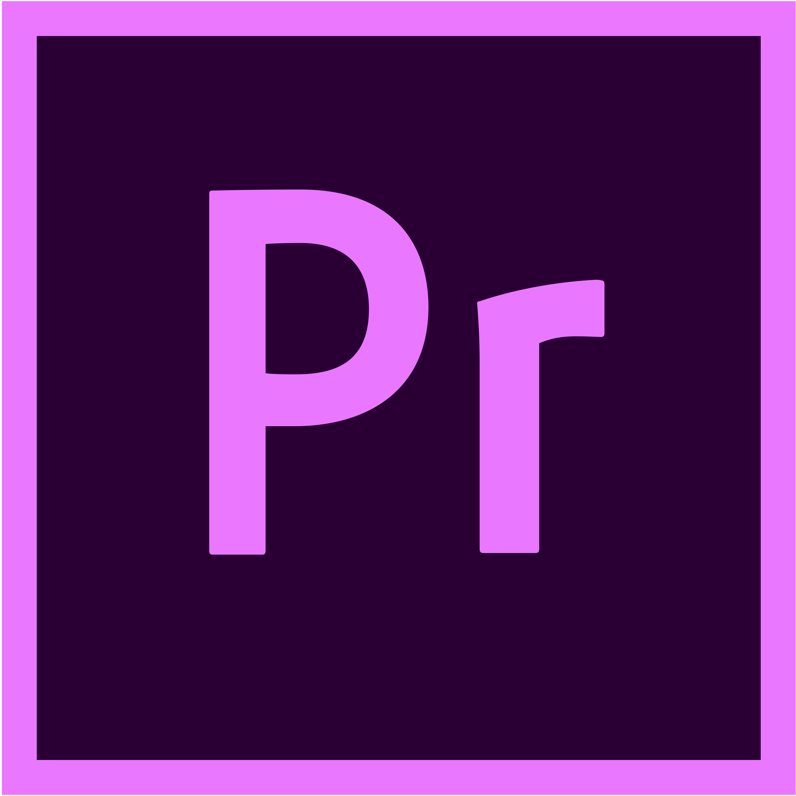
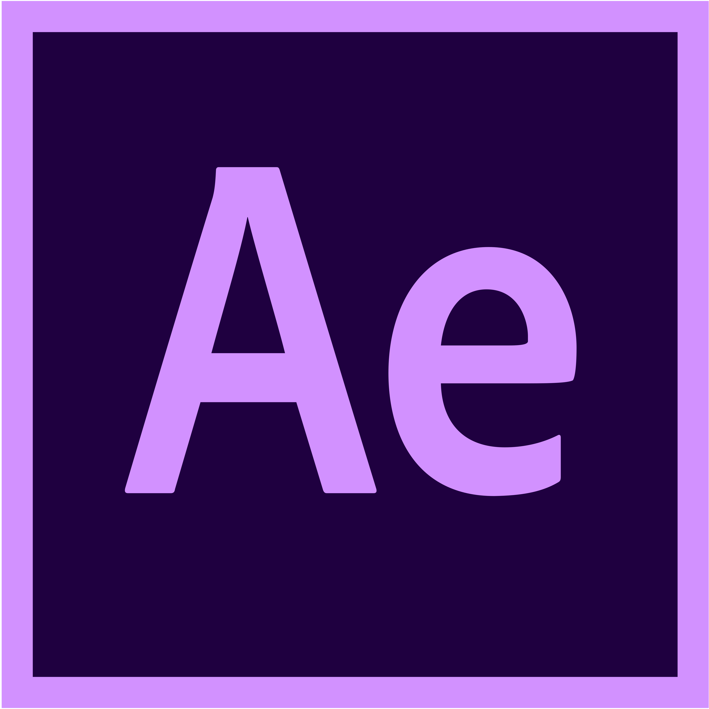
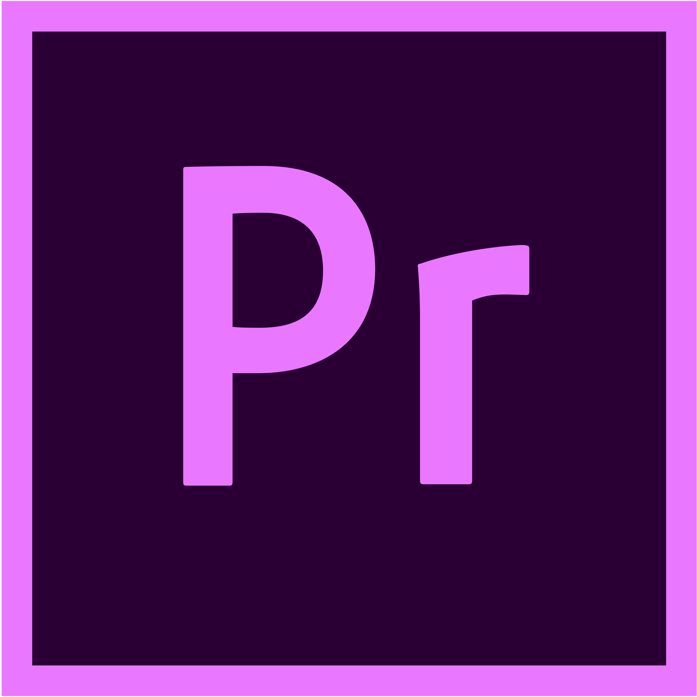

Multimedia
as a content creator of many different forms, my skills in multimedia are expressed in many different forms:
- Adobe Primere Pro
- Adobe After Effects
- Adobe Photoshop
- Adobe Xd
- Analog/Digital VHS conversion

 



Audio/Music Production
skills/expirence in audio production range from mixing, mastering and recording everything from music, to radio ads, to podcasts, and even radio dramas.
- FL Studio
- Abelton Live
- Pro Tools
- Izotope Ozone
- Adobe Audition

KMOS-PBS
Employed with KMOS-PBS since September 2021 as production specialist, tasks and skill include:
- Video Editing
- Live & Post Sound Engineering
- Camera Operation
- Live TV Broadcasting
- Documentary film making
CTV Sports Network
Broadcasting UCM Mules & Jennis games through CTV Sports Network
- Running & Operating multiple channels of live audio
- Sports Camera Operation
- Running/Rolling cable over 100 feet
- Creating live graphics for players
- Utilizing replay and creating replay playlists
Font-End Web Development
Skilled in front-end web development as well as UX and UI design
- HTML
- CSS
- Javascript
- Hand Coded Responsive/Animated Websites
- UX/UI Design


Education
Currently working on obtaining a Bachelors degree from the University of Central Missouri in Digital Media Production with an Emphasis in Audio.
- Bachelor of Science Degree
- Dean's List Student